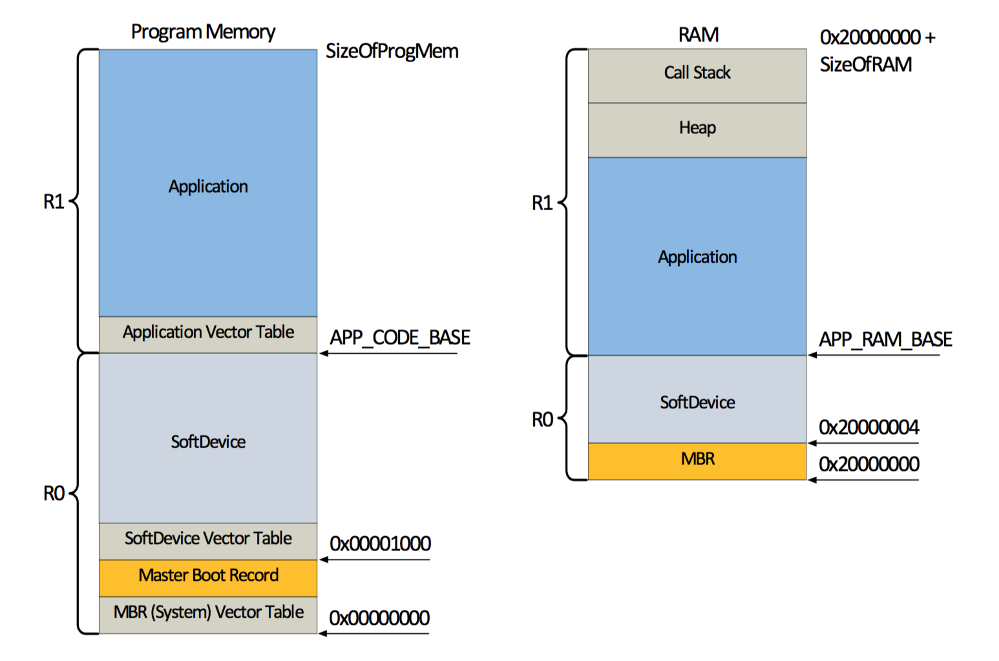
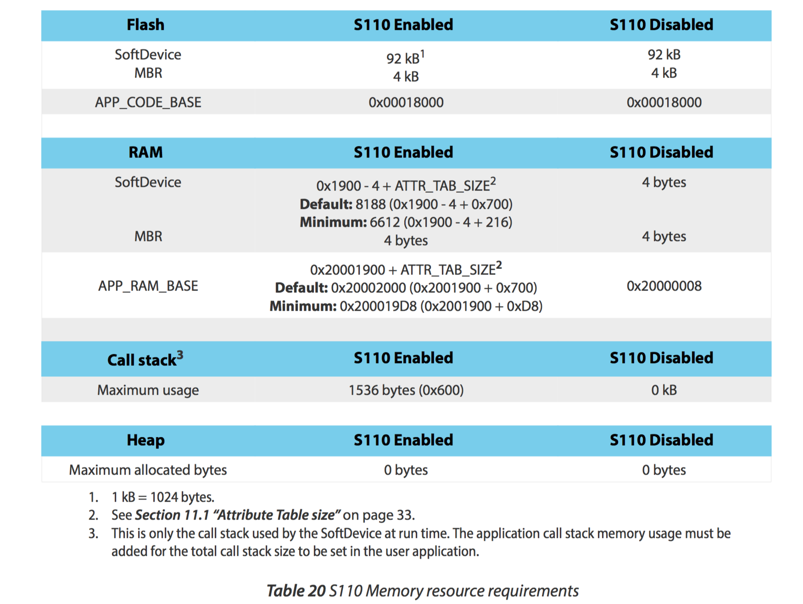
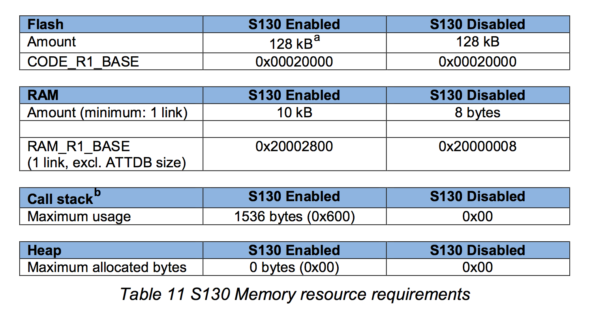

SoftDevice
SoftDeviceとは
Nordicが提供しているnRF5xシリーズ向けのプロトコルスタック。
nRF51シリーズ
BLE用はS110, S120, S130と３種類あり、それぞれ用途が異なる。
ちなみにS210, S310はANT/ANT+用のスタックになる。
ARM® CortexTM-M0向け。
nRF52シリーズ
52シリーズ向けSoftDeviceは現在(2015/9)開発中で、S130をベースとしたS132のAlpha版が提供されている。
S110,S120に対応した物も順次開発予定。
ARM® Cortex-M4F向け。
対応チップとバージョン

比較
| SoftDevice | 概要 |
|---|---|
| S110 | Peripheral専用 |
| S120 | Central/Peripheral両用。 Centralモードの場合は8つ同時接続可能、Peripheralモードの場合は同時にBroadcasterとしても動作する。 |
| S130 | Central/Peripheral同時利用。 Centralとして３接続と１つのPeripheralとして動作する。こちらはObserverとBroadcaster両方になれる。 |
メモリマップ
SoftDeviceの種類によってApplicationを書き込むアドレスやメモリの領域が異なる
ビルド設定時に以下の情報が必要になる

S110

S120

S130
